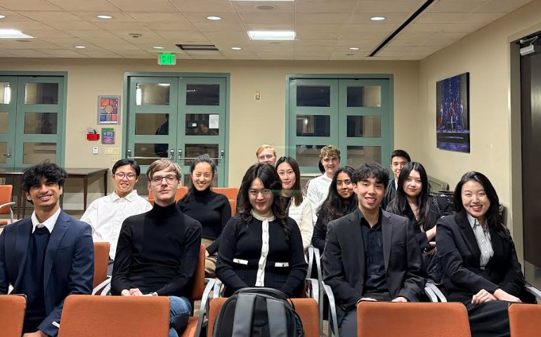

Market Research
Customer segments, competitor landscapes, market sizing, and opportunity scans.
For clients
PCG helps small businesses, founders, organizations, and professional teams think through strategic, operational, and growth-related challenges with focused student consulting projects.
What PCG offers
Our consultants bring analytical structure, fresh perspective, and careful research to questions that matter to your organization. Projects are student-led and supported by PCG leadership and mentors.
Project categories
Customer segments, competitor landscapes, market sizing, and opportunity scans.
Expansion ideas, go-to-market thinking, partnership opportunities, and positioning questions.
Surveys, interview synthesis, customer needs, and insights that can inform decisions.
Process mapping, operational pain points, handoff issues, and practical recommendations.
Early-stage analysis of repetitive workflows, tool opportunities, and implementation considerations.
Testing product rollouts, user flows, implementation friction, and early feedback loops.
Structured surveys, desk research, interview collection, and information gathering to support decisions.
Prioritized next steps that match your organization's size, constraints, and goals.

Why partner with PCG
PCG is especially useful when your team has an important question but limited time to investigate it. Student teams can help clarify the problem, gather evidence, and turn findings into a practical final recommendation.
Client process
Tell us about your organization, the decision or problem in front of you, and what support would be most useful.
PCG reviews fit, clarifies the project question, and shapes a focused workstream for a student consulting team.
The team researches, synthesizes, and presents findings with practical recommendations your team can act on.
Partner with PCG
This static site generates a pre-filled email inquiry to pomonaconsulting@gmail.com. If PCG wants spreadsheet/database collection later, connect this form to Google Forms, Formspree, or Airtable.